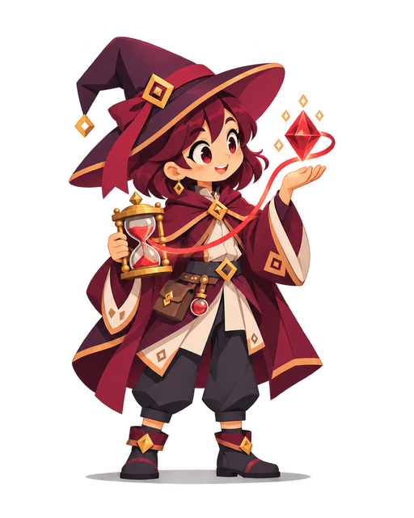
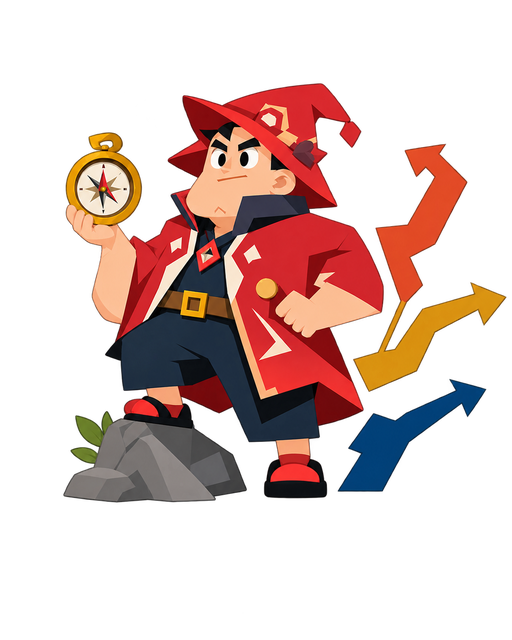
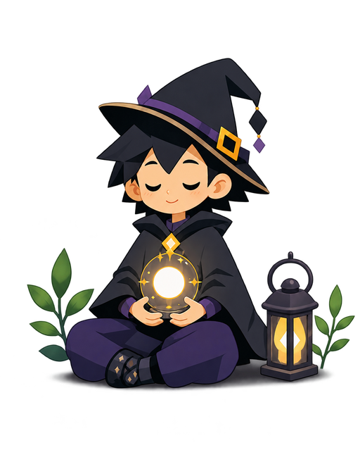
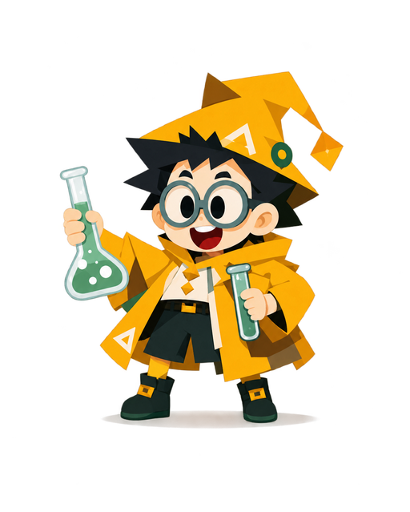

รายละเอียด Archetype
Family E · เวทประยุกต์และการลงมือทำ
Blood Mage
ผู้ชั่งน้ำหนักต้นทุนและผลของทุกการตัดสินใจ
“เข้าใจต้นทุนของทางเลือก แล้วลงมืออย่างมีความหมาย”




รู้จัก Blood Mage
ผู้ชั่งน้ำหนักต้นทุนและผลของทุกการตัดสินใจ
สร้างเครื่องมือ ตัดสินใจ และนำความรู้ไปใช้ในสถานการณ์จริง
ลายเซ็นนี้เป็นวิธีเล่าเรื่องการเรียนรู้ ไม่ใช่เงื่อนไขว่าคุณต้องเป็นแบบนี้ทุกครั้งหรือใช้มุมอื่นไม่ได้
Learning Signature
สามมุมการเรียนรู้ที่ใช้เป็นลายเซ็นของ Wizard สายนี้
นักตัดสินใจ
คุณกล้าชั่งน้ำหนักข้อจำกัดและเลือกทางเดินต่อ แม้ข้อมูลจะไม่ครบ 100%
นักทบทวน
คุณถอยกลับมาอยู่กับตัวเอง ตกผลึก และเข้าใจสิ่งที่เกิดขึ้นอย่างมั่นคงก่อนเดินต่อ
นักทดลอง
คุณเรียนรู้ผ่านการลองสมมติฐานและวิธีใหม่ในหัว ไม่กลัวลองผิดเพื่อค้นพบสิ่งที่ได้ผล
จุดแข็งที่ชวนสำรวจ
ตัดสินใจบนความเข้าใจข้อแลกเปลี่ยน
ลองนึกถึงเหตุการณ์ที่คุณเคยใช้มุมเหล่านี้ แล้วสังเกตว่ามันช่วยให้เข้าใจหรือทำสิ่งต่าง ๆ ได้อย่างไร
Growth Quest
ลองสร้างทางเลือกใหม่ที่ลดต้นทุนลง
ลองทำเป็นกิจกรรมเล็ก ๆ แล้วทบทวนว่าได้เรียนรู้อะไร ไม่จำเป็นต้องทำให้ได้เหมือนคำอธิบายทุกข้อ